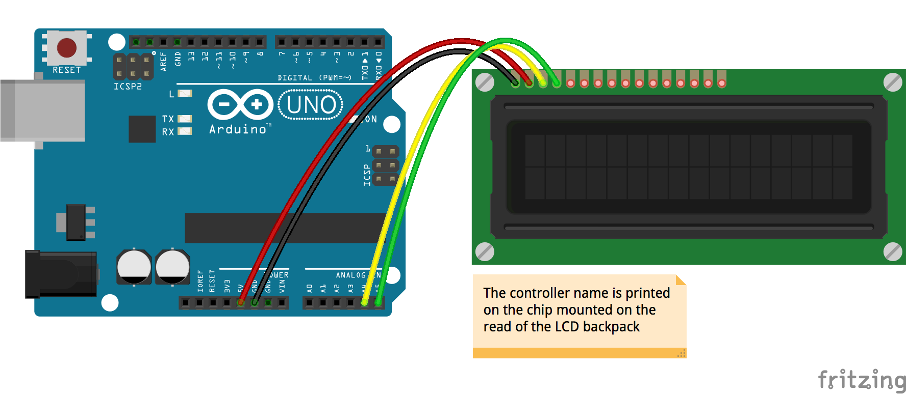

Road to JavaScript Maker
用JavaScript實現微電腦自動控制不是夢！

Cheton Wu (cheton_wu@trend.com.tw)
SaaS Lead Frontend Developer
GitHub: http://github.com/cheton
Hello, JSDC 2015
Cheton Wu (http://github.com/cheton)
Works at Trend Micro (since 2002)
JavaScript at work
Loves woodworking
DIY electronics: Arduino, Robotics
Build Website with JavaScript
JavaScript is Everywhere


var arDrone = require('ar-drone');
var client = arDrone.createClient();
client.takeoff();
client
.after(5000, function() {
this.clockwise(0.5); // range from 0 to 1
})
.after(3000, function() {
this.animate('flipLeft', 15); // 15ms
})
.after(1000, function() {
this.stop();
this.land();
});
Any application that can be written in JavaScript, will eventually be written in JavaScript.
– Jeff Atwood, 2007在你創造出JavaScript Robot之前
首先要知道...
如何用微處理器(Arduino)
去控制電路元件
如何建立一個
可以正常運作的電路
如何運用JavaScript
跟Arduino建立通訊
What's Arduino?


Arduino Board

Arduino IDE
Arduino Uno R3

Arduino Uno R3 (Back)
Arduino Nano

Arduino Nano Expansion

Arduino IDE
Tools > Board

Tools > Port

Examples > Basics > Blink
Examples > Firmata

基礎套件
- Arduino UNO R3
- USB Type-A 傳輸線
- 麵包板(Breadboard)
- 麵包板跳線(Breadboard jumper wires)
- 發光二極體LED
- 330/1K/10K歐姆(Ω)電阻
- 安全防護眼鏡
- 剪線虎鉗
體驗價不到1K
The Ultimate Kit
配原廠Arduino UNO約100美金

node-serialport
https://github.com/voodootikigod/node-serialport
firmata
https://github.com/jgautier/firmata
Standard Firmata
Direct Serial Port Access
var SerialPort = require('serialport').SerialPort;
var board = new SerialPort('/dev/tty-usbserial1', {
baudrate: 115200
});
board.on('data', function(data) {
console.log('data:', data);
board.write('It works!\n');
});
board.on('error', function(err) {
console.log('error:', err);
});
Take Your Chance
Johnny-Five
The JavaScript
Programming Framework


Rick Waldron
npm install johnny-five

Supported Hardware
LED

DC Motor

Servo Motor

Stepper Motor

LCD

Accelerometer
Compass

Joystick

http://johnny-five.io/examples/
LED

LED
var five = require('johnny-five');
var board = new five.Board();
board.on('ready', function() {
// Creates a led object on pin 13
var led = new five.Led(13);
// "blink" the led in 500ms on-off phase periods
led.blink(500);
});
Node.js REPL Terminal
board.on('ready', function() {
var led = new five.Led(13);
this.repl.inject({
// Allow limited on/off control access to the
// Led instance from the REPL.
on: function() {
led.on();
},
off: function() {
led.off();
}
});
});
$ node led.js
>> on() // will turn on the LED
>> off() // will turn off the LED
Motor
Motor
Servo

Servo
Temperature

Temperature
// Temperature Sensor
var temperatureSensor = new five.Sensor({
controller: 'TMP36',
pin: 'A0'
});
// Check Temperature
function checkTemperature() {
temperatureSensor.on('change', function(err, reading) {
var voltage = reading * 0.004882813; // i.e. 5V / 1024
// For Celsius
var temperature = (voltage - .5) * 100;
// For Fahrenheit
// temperature = temperature * 1.8 + 32;
console.log('Temp:', parseInt(temperature));
});
}
LCD - I2C
LCD - I2C
Live Demos
IoT Weather Display
Communicating Over WiFi
Module Setup (w/ Breakout Board)
WiFi232 Pin 1 (GND)
GND
WiFi232 Pin 2 (3.3V)
VCC (3.3V)
WiFi232 Pin 5 (RX)
Arduino (TX) Pin 1
WiFi232 Pin 6 (TX)
Arduino (RX) Pin 0
Johnny-Five Setup
Node.js
Pseudo Terminal (~/dev/ttyV0)
TCP Socket (10.0.1.12:8899)
-
Use
socatto fake a serial terminal:socat -d -d pty,nonblock,link=$HOME/dev/ttyV0 tcp:10.0.1.12:8899
-
Execute it like this:
node blink.js ~/dev/ttyV0

var five = require('johnny-five');
var board = new five.Board();
board.on('ready', function() {
var claw, joystick;
// Claw servo controller
claw = new five.Servo(11);
// Joystick controller
joystick = new five.JoyStick({
pins: [ 'A0', 'A1' ] // X, Y
});
// Center the claw servo
claw.center();
joystick.on('axismove', function() {
var degrees = Math.ceil(180 * this.fixed.y); // 0-180
claw.move(degrees); // Move the claw
});
});
Road to JavaScript Maker
https://blog.safaribooksonline.com/2013/07/16/javascript-powered-arduino-with-johnny-five/
一旦玩出興趣來其實也是個錢坑 XD
Firmata Protocol
The Firmata library for Arduino
https://www.arduino.cc/en/Reference/Firmata
Example

The Firmata library for Node.js
https://github.com/jgautier/firmata
A Node library to interact with an Arduino running the firmata protocol.